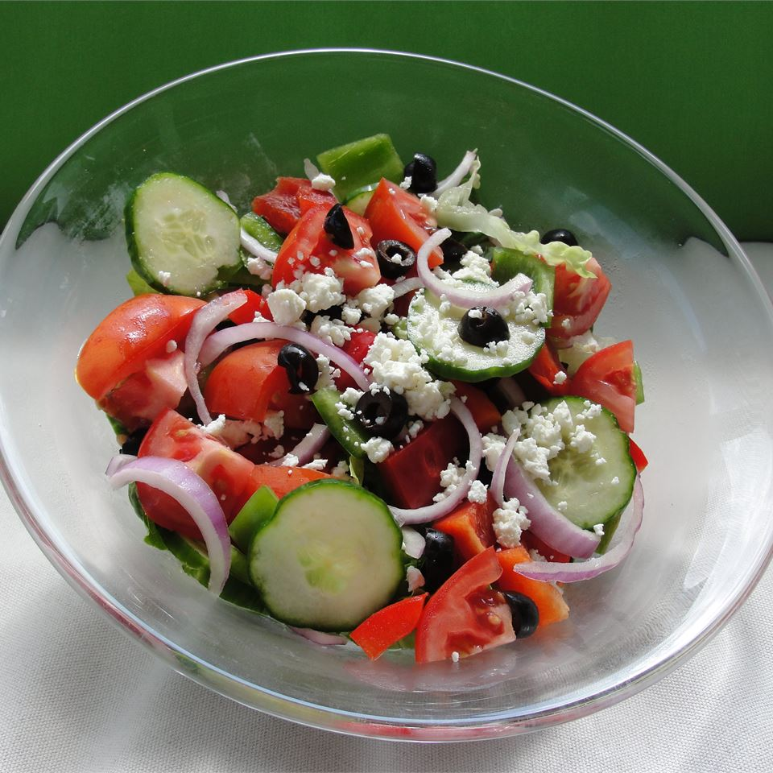

A nice and tangy Greek salad recipe that works best in the summer, when fresh vegetables are available!
- 1 head romaine lettuce—rinsed, dried, and chopped
- 1 red onion, thinly-sliced
- 1 (6-oz) can pitted black olives
- 1 green bell pepper, chopped
- 1 red bell pepper, chopped
- 2 large tomatoes, chopped
- 1 cucumber, sliced
- 1 cup crumbled feta cheese
- 6 tbsp. olive oil
- 1 tsp. dried oregano
- 1 lemon, juiced
- ground black pepper, to taste
- In a large salad bowl, combine the Romaine, onion,
olives, bell peppers, tomatoes, cucumber and cheese.
- Whisk together the olive oil, oregano, lemon juice
and black pepper. Pour dressing over salad, toss
and serve.